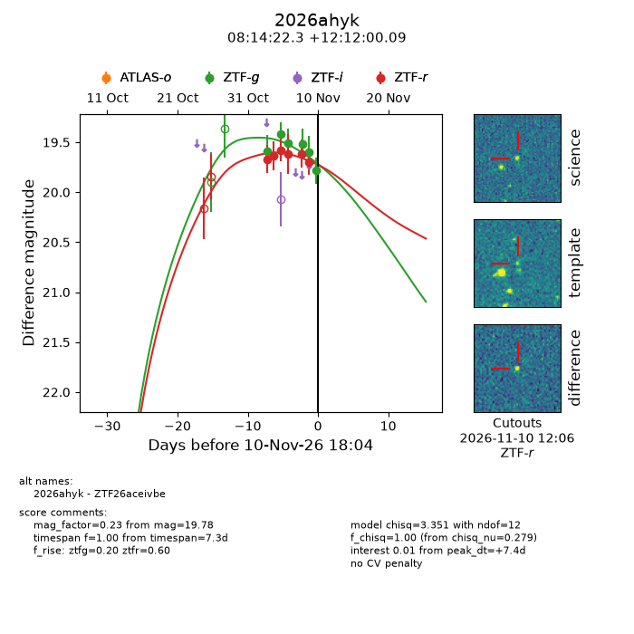
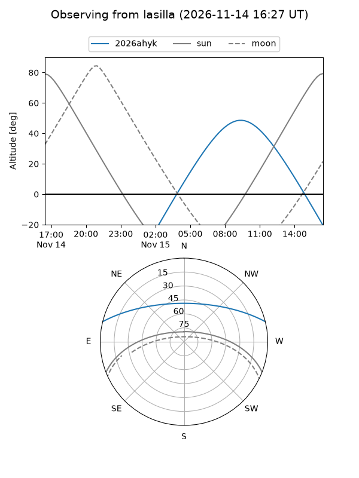
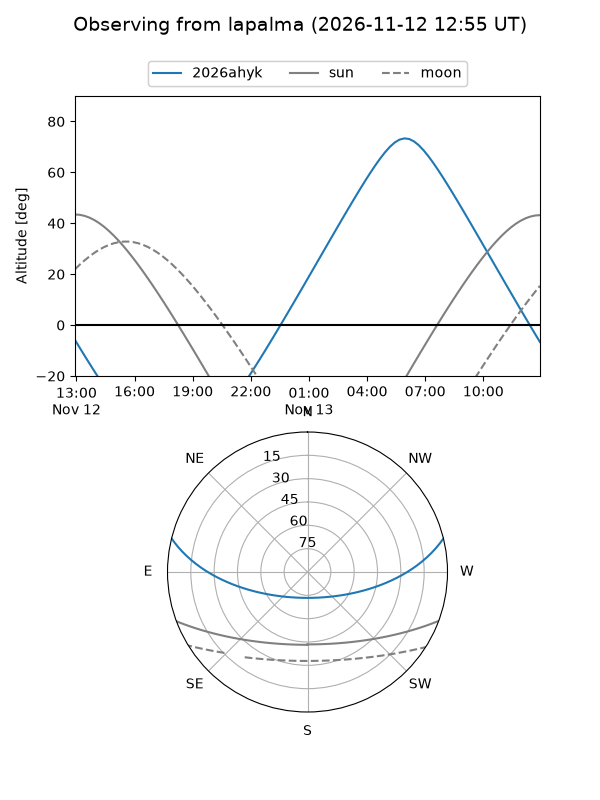
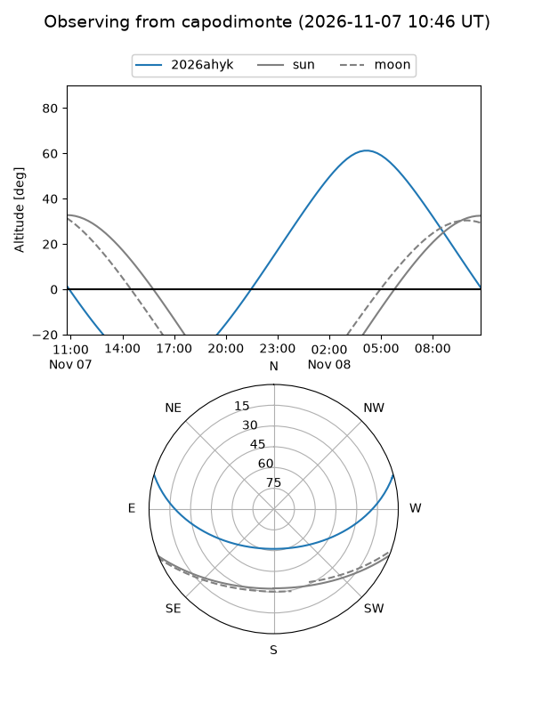
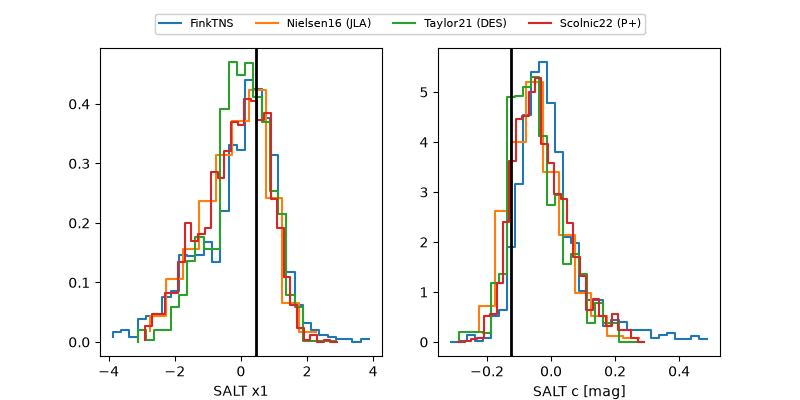

2026ahyk
Target 2026ahyk at 2026-11-10 18:07
Aliases and brokers:
FINK-ZTF: ztf.fink-portal.org/ZTF26aceivbe
Lasair-ZTF: lasair-ztf.lsst.ac.uk/objects/ZTF26aceivbe
ALeRCE-ZTF: alerce.online/object/ZTF26aceivbe
YSE-PZ: ziggy.ucolick.org/yse/transient_detail/2026ahyk
TNS name: wis-tns.org/object/2026ahyk
Direct TNS query: direct search
alt names
ZTF26aceivbe (ztf,fink_ztf)
2026ahyk (tns,yse)
Coordinates:
equatorial (ra, dec) = 123.5929,+12.20003
equatorial (HMS+DMS) = 08:14:22.29,+12:12:00.09
galactic (l, b) = (211.0338,+23.84846)
Flags:
peak dt: +7.4
Photometry:
last ztfg=19.78, ztfr=19.70
6 ztfg, 6 ztfr detections
Lightcurve

Visibility



Additional plots
